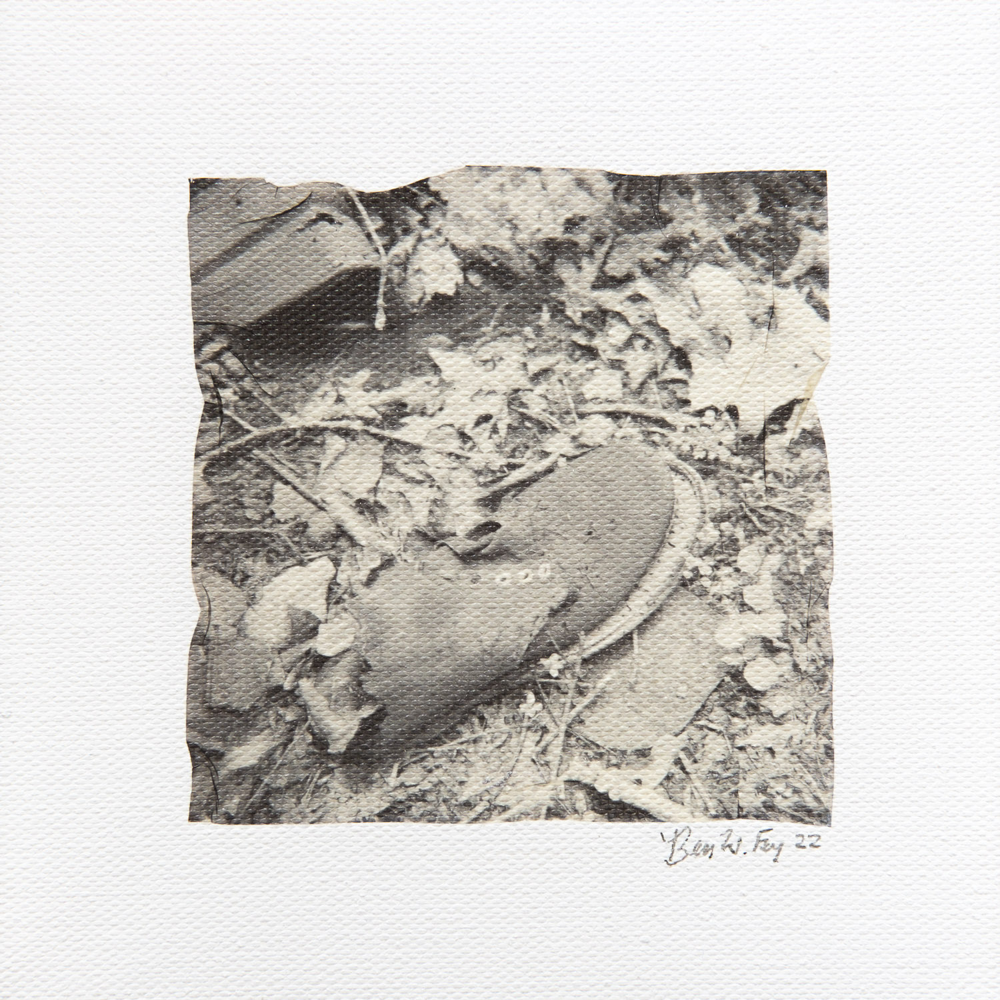
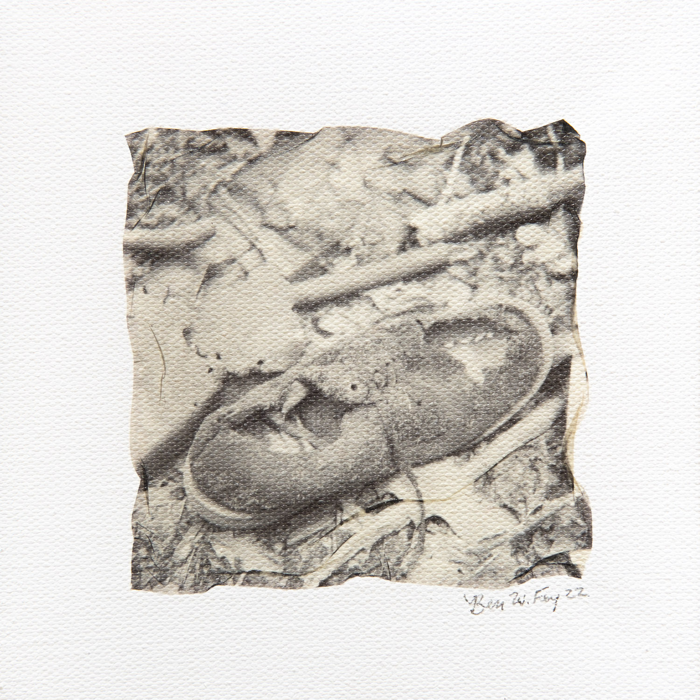
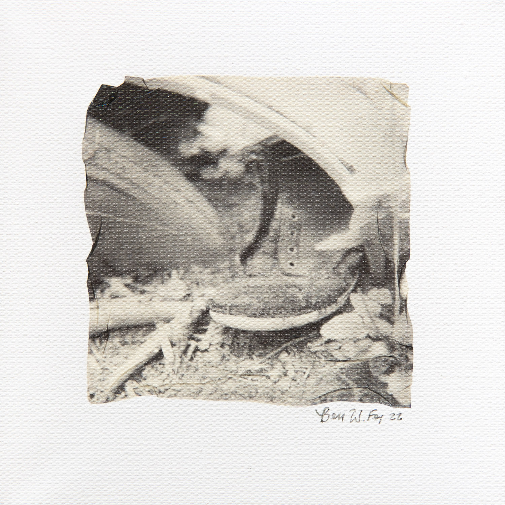
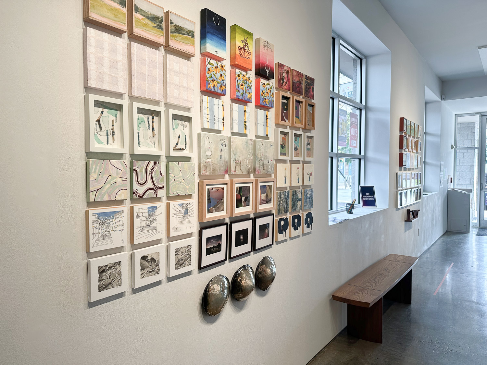
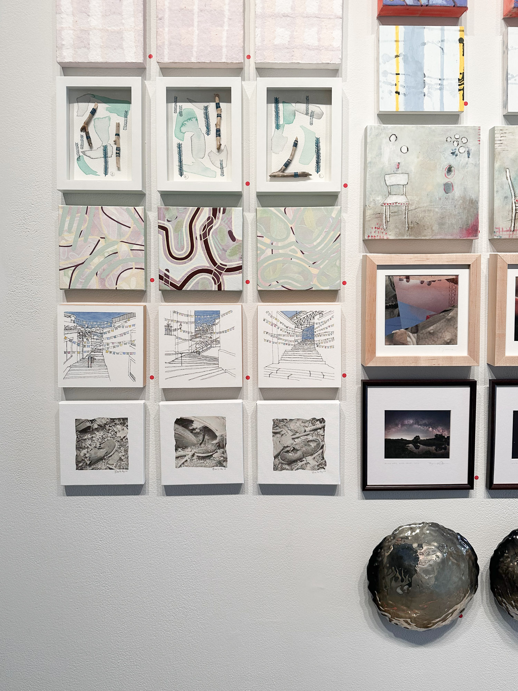

Teeny Tiny Trifecta 5
A group exhibition and fundraiser
2-30 September 2022
Second Street Gallery
Charlottesville, VA
The Exhibition
I was part of a group exhibition with 146 other artists. Each artist created three works that measure 8" x 8" or smaller.
Artist Statement
I mainly shoot film (35mm, medium format, instant photography) and have been developing my own black and white film at home since 2017. I find shooting film helps me to slow down and see the beauty around me. I studied architecture at the University of Virginia and am drawn to the built environment and how we use the space and objects around us. I love capturing the overlooked details around me in my photography.
For this series, I wanted to explore how the built world around us weathers and decays. I found a group of decaying shoes and boots near an abandoned vehicle in the woods and was drawn to how they are falling apart, covered in moss, and are slowly returning to the earth.
I explored a new photographic technique for me: the Polaroid emulsion lift. In this process, I took a photo with my Polaroid SX-70 instant film camera, let the film process for a few hours, and then soaked the image in hot water. This allowed me to separate the fragile image from the plastic frame. I then transferred the image to a canvas and manipulated the image (folding, adding creases, deforming the edges) as a way to weather and decay the square image into something more organic. I wanted my technical photographic process to mimic and echo the journey that the shoes experience as they weather and decay.
I hope my photography helps you to slow down and look at something you might have passed by without a second thought during the rush of life.
The Photographs


6" x 6" Polaroid emulsion lift on canvas.


6" x 6" Polaroid emulsion lift on canvas.


6" x 6" Polaroid emulsion lift on canvas.



